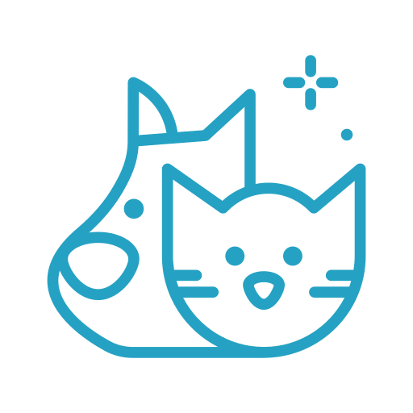

近年來國人飼養寵物比例逐漸提高，根據行政院農業委員會畜牧處動物保護科統計，全台犬貓等寵物飼養數已突破250萬、年增長率高達10％。然而人需要寵物時時相伴，外頭也有一群浪浪渴望愛的溫暖，政府長期關注流浪動物議題，積極呼籲國人「領養不棄養」。
1. 有獨立經濟能力，年滿二十歲以上，男需役畢，若學生想領養，必須家裡支持。
2. 必須簽一式兩份領養切結書。
3. 必須同意犬貓成年後進行結紮手術。
4. 同意不定期追蹤。
5. 與家人同住的申請人，需得到家庭成員同意。
6. 申請人需親自選定領養動物，不能他人代勞。
7. 申請人必須按政府的規定進行晶片輸入。
8. 需到合法獸醫處注射疫苗。
以寵物認養這個主題發想，結合Kaggle上的資料，我們想做關於人們對於寵物的各種特徵的喜好度關聯分析。製作各種分析圖表，引起大家興趣，進而促成大家開始關心寵物認養的議題。
民眾喜歡哪些特質的貓。
民眾喜歡哪些特質的狗。
收容所的動物都是什麼毛色。

從Kaggle上的資料來觀察，我們可以看出其實以當天就被領養的動物而言，各項因素的影響都不大，但貓有較高的機率會被領養，而在一星期到一個月之間被領養的動物，明顯是有純種特徵或純種的貓狗較受歡迎，會優先被領養，之後則是以米克斯的比例急遽上升。而健康狀況也是一個因素，通常到兩三個月後才被領養或未被領養的動物，多半是有可治癒或無法治癒的輕重傷，多數民眾仍會優先領養健康的動物。
觀察全國動物收容管理系統提供之動物認領養的資料，有關毛色的部分，我們推測原因一方面是因為不管在東西方的習俗中，黑色通常有不祥的象徵，甚至在西方有些人會認為黑貓是不吉利的，因此收容所中毛色為黑色的貓狗會較多；另一方面，現代還有一個原因也是導致牠們容易遭棄養的，根據英國每日郵報的報導，英國RSPCA調查發現，黑貓常常因為不上鏡，難對焦而遭到棄養，在收容所的詢問率也較低。
而目前收容所站收容數量遠遠大於100%所在多有，爆籠的情形很常見，因為大家可以領養代替購買，有想養寵物可以去收容所把貓貓狗狗領養回家。
06170232
06170128
06170208
06170235
06170245